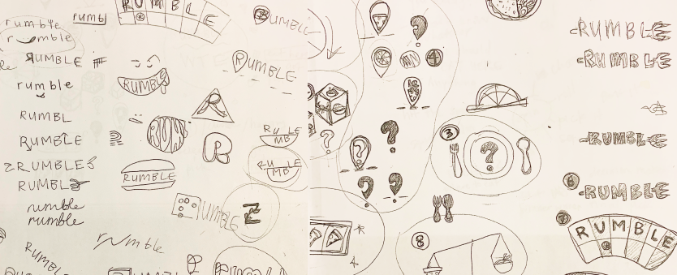
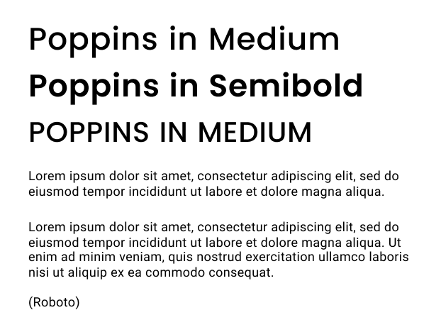

OVERVIEW
Deciding where to eat sounds easy, but it can be a daunting task. With different preferences and personalities, making a quick decision that satisfies everyones needs seems nearly impossible. Rumble is here to ease the process by answering the old age question of, “What do you want to eat?” by randomly choosing a restaurant for you.
ROLES
User Research / Prototyping / Visual Design / Brand Identity
DELIVERABLES
User Surveys / Personas / Competitive Analysis / User Stories & Flows / Prototype / Wireframes / High Fidelity Mockups / User Testing / Visual Design
TOOLS
Figma / Marvel / Whimsical / Sketch / HTML / CSS
DURATION
8 weeks
THE PROBLEM
Although Google Maps or Yelp can be used to search for restaurants, the time it takes to browse through dozens of places can be time consuming and lead to greater indecision. An app that saves time and helps to shorten the decision making process would add great value for the average hungry human.
THE SOLUTION
Rumble generates a list of restaurants and randomly chooses where the user should dine out. They can set their location and filter through food types, price point and other filter options. The decision making app creates an intuitive and personalized experience while helping local restaurants and saving users from indecision.
RESEARCH
USER RESEARCH
A survey was taken by 58 participants to discover dining behaviors such as what users value most when choosing a restaurant and how discounts effect dining decisions. I wanted to know current apps used and the value a decision-making app would have in their daily lives.
Key findings:
88% eat out at least once a week and up to four times a week, with more than half eating out with others.
Top three factors influencing dining decisions are location (80%), cuisine (73%) and price point(70%)
90% say that reviews and ratings are important
88% agreed that discounts and promotions would influence their decision.
INTERVIEWS
I interviewed three participants asking more detailed questions about their decision making process when deciding to eat out. The top priorities for all three interviewees were type of food they were craving and location. Frustrations experienced were not knowing what to eat and nothing sounding appetizing.
“It frustrates me when me and the other person can't decide on the same place because we’re craving different things.” - Sharon
“Not being able to think of a place and eating out with picky eaters sets me back when making a decision” - Sean
“I rely heavily on reviews and ratings if it’s a place that I haven’t been to.” - Christine
COMPETITIVE ANALYSIS
I looked into three existing apps and conducted a SWOT analysis to compare features and understand strengths and weaknesses across these platforms. Yelp was most widely used by participants to find restaurants. It is used to find businesses outside of just restaurants and has advanced search capabilities with various filters. It has a strong review system but is criticized for having unreliable reviews. Spotluck and Restaurant Roulette also help find restaurants but are closer to a decision-making application. Spotluck soley focuses on discounts but with a limited pool or restaurants, users aren’t always satisfied with restaurants that are chosen. Restuarant Roulette includes filters for cuisine, price and location, but there are no other features and users must set all filters in order for the app to choose a restaurant.
Yelp
Spotluck
Restaurant Roulette
USER PERSONAS

JAYNA HEAD
Occupation: Student / Age: 31 / Location: Los Angeles, CA / Annual Income: $60K Gender: Female
MOTIVATION
She works hard but also makes it a priority to spend time with family and friends. She is currently saving for future trips so discounts on social outings are a plus. She enjoys getting to know her local neighborhood and on the lookout for trendy, new spots she can recommend to others. She mostly eats out with her partner and doesn’t mind going out of the ways for good food. They both like different foods so deciding on where to eat can be challenging at times. She is active on social media, posting stories of her own and checking to see what her friends are up to.
GOALS
- Saving money
- Quickly deciding on a place to eat
- recommend spots to others
- browsing and uploading photos and reviews
FRUSTRATIONS
- Has to check both school and social accounts separately
- Some plans are too expensive

KATE DIAZ
Occupation: Market Research Analyst / Age: 32 / Location: Los Angeles, CA / Gender: Female
MOTIVATION
As a Market Research Analyst, Kate works on multiple projects at once. She is typically conducting research and collecting data, so collaborating and sharing her findings are an important. She must synthesize her findings into large documents and create presentations for clients, creating various files such as documents, slides, and spreadsheets. She relies on quick accessbility and easy organization of files in order to successfully complete tasks and projects.
GOALS
- Organization with a clear hierarchy
- Easily collaborate on documents
- Easier ways to share and collaborate files
FRUSTRATIONS
- Unable to clearly differentiate between files
- Limited storage space
- Too much time spent finding different types of files in storage
MY GOALS
From continued research, my goal is to create a space where users are able to share content and collaborate on files, create a dasboard with a clear hierarchy of information, and allow for easy organization of content.
INFORMATION ARCHITECTURE
BRAND IDENTITY
LOGO
I used mind maps and word association to brainstorm names for the app. I gravitated towards using short and simple words, settling on Rumble. A playful, two-syllabe name, it embodies hunger and the need for food.
Mind maps
Logo sketches
I sketched out different logo ideas but steered away from using the conventional fork or plate, playing around with the text instead. The final design consists of the name in lower case letters curved into an arch, creating an approachable and modern look. The logo seems approachable and reliable, while continuing to emphasize its playful nature.
COLORS
I played with bright colors such as red, orange and yellow, colors connected to appetite and stimulation. These brght colors not only grab your attention, but are connected to appetite and stimulation. I stayed away from using red, a color that was overused by many food apps. Instead, I narrowed down the colors to just two shades of vibrant orange. Using one color help to create strong brand recognition while keeping my designs simple and consistent. Deep navy blue and grey were used as secondary colors to give depth to the primary color and create a bold, dynamic look.
#F8634A
#F64036
#292B33
#DADADA
TYPOGRAPHY
Poppins, a geometric sans serif, was used as the primary font. The symmetrical curavtures create a modern look with text that is evenly spaced and easy to read. Roboto, also a modern sans serif, was used as the secondary font. It is not as rounded as it’s pairing font, but instead has a more formal personality, effectively contrasting with the playful nature of Poppins. Pairing these two recognizably different fonts together create a modern feel that is dynamic and easy to digest. I used letter spacing to my advantage to create a spacious look.
WIREFRAMES & TESTING
WIREFRAMES
Taking the user flows, I quickly sketched a basic layout for each screen on paper. I then used Figma to create a set of wireframes and tested them on a few participants via Marvel and Figma. The onboarding process along with adding their own restaurants into a list were completed with ease. Users experienced some trouble when asked to find a list of restaurants by setting filters and leaving a review. The directions given along with the how the information was organized led to confusion. Through testing, I was able to see where I needed to make changes to simplfy these tasks.
Home Page: I created three separate options to get a list of restuarants: a filtered list, a list of your own restaurants and a list of discounted restaurants. I decided to include a discount option on the homepage since the majority of participants said they were influenced by discounts. Through testing, I discovered that there was not enough information to clarify what each selection would yield. Having three differing options also caused confusion. To simplify the tasks, I eliminated the discount option and merged it with the filtered list option and added text to add more clairty and simplify the page.
Filter Page: The filtered page consists of five sections that include setting a location, the distance from location, food types, discounts and other options. I created different versions, creating preference tests and seeing which screens worked best. In testing, users found the information to look too cluttered on one page. I decided to space each filter option onto separate screens, highlighting each selection. This change also led to a different approach in presenting the information. Instead of separating each filter section with a label, questions were presented to engage the user in conversation and humanize the app.
Call-to-Actions I made sure to deemphasize buttons on screens that had more than one button, highlighting the primary action to keep users focused. I also kept buttons that should not yet be used dormant.
Location access: I made sure to ask users for access to their location after they clicked an action to set a location, rather than asking at the start when the user not yet browsed the different features.
MOCKUPS & TESTING
In the high fidelity mockups, I wanted to create a strong structural hierarchy via text size, color, and spacing while focusing on engagement and consistency. Another round of testing was done to test out changes made from the wireframes.
Hierarchy and Clarity:
A screen was added before onboarding to give clarity and explain the decision making app.
On the onboarding screens and homepage, anchor texts were kept consistent and a dark background was used to highlight call-to-actions.
I also deemphasized secondary buttons or kept buttons dormant to give focus to the primary actions.
Lastly, I played around with font styles and size to emphasize visual hierarchy.
Dark background
Consistent anchor texts
Deemphasized buttons
Filter Page:
After wireframe testing, I distributed the filter options into separate screens, but realized its weak usability.
Users had no way of quickly viewing their filtered options so I reverted back to including all filters on one page, but omitting ‘distance from location’ and ‘discounts and offers only’.
The ‘distance from location’ was removed since the app automatically finds restaurants near the location selected and a discount option was included under ‘More options’ instead of having its own section.
These changes proved to be helpful, with users experiencing little to no difficulty during testing. By choosing to get rid of these sections, more space was created to evenly display information onto a single screen and provide greater visibility.
I made different versions of the filter screen such as including images to break up the text. The images worked on a smaller scale, but when added to all options, it gave a cluttered look. I found that setting all filter selections to equal widths without images gave a clean look that was easy to read.
Leaving a Review:
When asked to leave a review, some users were unsure of where to start.
It either created initial confusion or took some time to complete.
For greater visibility, I included a ‘History’ icon in the bottom nav where users could quickly view selected restaurants from the past, taking them directly to the restaurant page where they could leave a review.
WHen retested, all participants were able to quickly leave a review.
INSIGHTS
WHAT I LEARNED
Take decisive action and keep moving forward.
I found that feedback is crucial and needed in moving on and making better design decisions, but spending too much time on certain aspects would keep me from moving on to the next step.
I needed to keep looking forward and take action by setting a time limit for each phase.
The more testing the better.
More testing during the intial stages could have prevented me from building out detailed screens that were not needed, saving me time.
Although conducting more tests earlier on is helpful, I learned that there is no linear design process and some steps can be done more than once.
LET'S CONNECT!